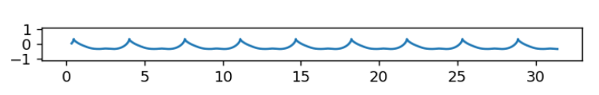
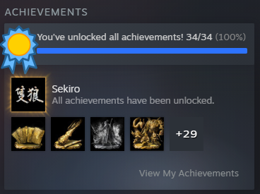

Xinyi Xiong (熊心一 in Chinese) (She / Her)
Ph.D Student, Computer Science, Graphics Track, University of Utah
Thanks for checking me!
I'm a Ph.D student (Fall 2022) in the School of Computing at the University of Utah, advised by Prof. Cem Yuksel. Before I started my Ph.D study, I worked as a software engineer in a game company, Seasun Games, in China for 2.5 years. I obtained my master's degree in the University of Chinese Academy of Sciences in 2019 and bachlor's degree in the Zhejiang Sci-Tech University in 2016. Now, my research focus on water wave simulation. In addition, I'm also interested in rendering and geometry.
When I'm free, I'm a girl addicted to video games! When I was young, I regarded game-related technical research as my lifetime dream and goal. This is the reason why I choose Computer Science as my major and study for Ph.D. I enjoy playing 3A games. You can see my full achievements in the Sekiro: Shadows Die Twice. In addition, I enjoy watching NBA. At the same time, I'm a feminist. Born in a small city, I encountered sexism in my life since I was young. I absolutely hate these behaviors. Therefore, pursuing freedom and equality and helping others is another goal in my lifetime.
Contact
Email: Xinyi.Xiong@utah.edu
GitHub: https://github.com/xiaoxianrouzhiyou
Steam: 142136383